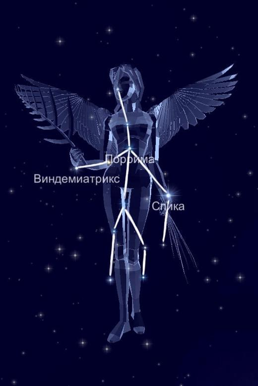

Поскольку охватывает 1294 квадратных градусов, это второе крупнейшее созвездие во всём небе. Вдобавок сейчас в нём лежит точка осеннего равноденствия. Границы территории соседствуют с Весами, Волопасом, Волосами Вероники, Вороном, Гидрой, Зайцем, Львом и Чашей.
Миф о происхождении.
В сочинениях древних поэтов дева часто называется Астреей. Она жила на земле в Золотом веке (первая эра человечества, эра спокойствия и безмятежности, когда были идеальный мир и счастье).
"Даймоны", о которых говорит Гесиод, это невидимые духи, которые наблюдают за смертными. Предположительно, Астрея - даймон правосудия. Символом ее деятельности являются Весы, следующий знак зодиака в зодиакальном цикле.
Звёзды, образующие созвездие Лев.
Самая яркая на небесном участке, несомненно, является Альфа — Спика, обозначающая пшеничный колос Девы. Более того, это 15 ярчайшая звезда во всём пространстве.
На втором месте стоит Гамма — Порриме, то есть богиня рождения или пророчества.
Третье место занимает Эпсилон с загадочным названием Виндемиатрикс, что обозначает сборщик винограда.
Затем следует Дзета — голубой субгигант.
На пятом месте расположилась Дельта — Минелаува, чьё имя значит лающая собака.
Наконец, Бета — Завийява на участке обозначает ребро собаки. Мю указывает на ногу или лапу собаки и является голубым гигантом.
А вот Эта — Заниах, то есть угол, выражена тройной системой с близкими друг к другу компонетами.
Ню — красный гигант, обладает переменной яркостью.
Йота — Сирма, чьё имя переводится как шлейф одежды, представляет собой бело-голубой субгигант.
Следует отметить, светила 61, 70 и 109 Девы. Они принадлежат к карликовым звёздам.
Хи — двойная система звёзд.
Так как видимость области приходится на широте от +68 до -75 градусов, то доступно для жителей России из любого региона. Но лучшие условия отмечаются в марте и апреле.
|

|